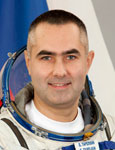

Федеральное государственное бюджетное учреждение
«Научно-исследовательский испытательный Центр подготовки космонавтов им. Ю.А. Гагарина»
Федеральное государственное бюджетное учреждение |
 | |
Biographical Data |
||
Evgeny Igorevich Tarelkin
Soyuz TMA-M flight engineer
ISS flight engineer
Test-cosmonaut of Yuri Gagarin Cosmonaut Training Center
Lieutenant-Colonel of the Russian Air Force,
Non-flown
PERSONAL DATA: Born December 29, 1974, in Pervomaisky, Shilka District, Chita Region, Russia. Married to Alla Georgievna Tarelkina. They have two daughters, Alisa, born in 2002, and Anna, born in 2007. His parents, Igor Evgenievich Tarelkin and Lyudmila Fyodorovna Tarelkina, reside in Shchyolkovo, Moscow Region.
EDUCATION: In 1992 he graduated from school # 14 in Shchyolkovo-3, Moscow Region, and entered the Eisk Air Force Pilot School. In 1996 he was referred to the Yuri Gagarin Air Force Academy. In 1998 Tarelkin graduated from the Academy as a specialist in air transport operation and air traffic management.
EXPERIENCE: After graduation from the Academy, October 1998 to December 1999, Tarelkin worked as a scientist at the Yuri Gagarin Cosmonaut Training Center.
December 1999 to June 2003 he served as a flight test engineer and senior flight test engineer at the GCTC. His responsibilities included support of cosmonaut winter, water and desert survival training; special parachute training as an instructor of cosmonauts or cosmonaut candidates; zero-gravity parabolic flight training onboard the Ilyushin-76 MДK laboratory aircraft.
By the time of selection to the Cosmonaut Corps he has mastered skills of piloting the Л-39 and Л-29 aircraft. Tarelkin has logged a total of 307 flight hours including the flights aboard the Ilyushin-76 MДK laboratory aircraft. He is a Class 3 flight test engineer. He is a qualified paratrooper instructor who has performed 800 parachute jumps and military diver.
SPACEFLIGHT TRAINING: Tarelkin was selected as a GCTC test-cosmonaut candidate in May 2003 by the Interdepartmental Cosmonaut Selection Board.
In the timeframe of June 2003 to June 2005 he completed basic spaceflight training and passed the exams with excellent grades on June 27, 2005.
On July 5, 2005, he was qualified as a test-cosmonaut by the Interdepartmental Qualification Board.
August 2005 to March 2010 he took the ISS advanced training course.
March to May 2010 he trained as the ISS 31/32 backup crewmember, the Soyuz TMA-M/ISS Flight Engineer.
Since May 2012 he is training as the ISS 33/34 prime crewmember, the Soyuz TMA-M/ISS Flight Engineer.
AWARDS: The Ministry of Armed Forces of Russian Federation medals: “For Military Virtue” II degree, “For Distinguished Military Service”, II and III degree; the Russian Air Force award “For Meritorious Service.”
HOBBIES: Diving (PADI-qualified assistant instructor) and sky diving (master of sports candidate in sky diving).
JULY 2012